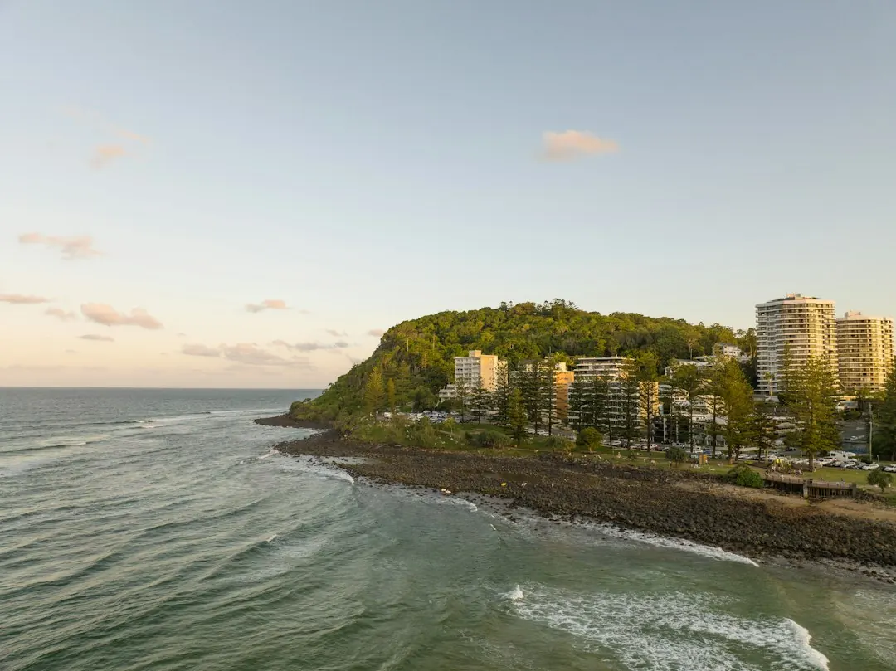

For homeowners comparing retaining wall options gold coast projects, the practical decision starts with site conditions, drainage, access and approval questions rather than the visible face material alone.
Retaining Wall Options Gold Coast Explained
Gold Coast Retaining Wall frames the decision around the wall's highest point, soil and water conditions, nearby loads, and the route needed for an excavator, materials and spoil. Those details can change the feasible system before appearance becomes the leading consideration.
Access is especially important on established suburban boundaries and landscaped sites. A narrow gate may rule out components that need mechanical lifting. On sloping land, the wall, drainage, batter and machine access may need to be considered together. Coastal yards, compact northern estates and hinterland slopes can therefore produce different quoting questions even when the requested wall looks similar.
- Record the highest point and approximate wall route.
- Describe gate width, driveway access, existing structures and spoil removal constraints.
- Note visible water, low points, roofwater paths and neighbouring ground levels.
- Explain whether the goal is a new terrace, boundary wall, replacement or erosion response.
Match the system to the job
Concrete sleepers with steel posts suit residential boundaries, terraces and replacement walls where a clean finish and low maintenance are priorities. Segmental blocks can suit landscaped terraces and engineered walls, with geometry, ground conditions and the desired finish guiding selection.
Boulders or natural stone are suited to larger landscapes and sloping sites where drainage, batter and machine access can be designed together. Treated timber sleepers are presented for suitable low garden and landscape applications, provided drainage and expected service life are made clear before construction. Gabions use rock-filled cages for selected landscape, erosion and retaining applications where a textured, free-draining finish suits the site.
For another perspective on the broader local category, see the guide to retaining walls across the Gold Coast. The useful comparison is whether the system fits the ground, water, access and intended finish.
Drainage is part of the wall system
Water should be mapped before excavation and not discovered after the wall is closed. The supplied guidance identifies free-draining aggregate, geofabric and subsoil drainage as components that only work when water has a lawful destination. Surface runoff, roofwater, neighbouring levels and low points all belong in the site review.
Ask how water will move behind the wall, where an outlet can discharge, and whether existing stormwater arrangements affect the proposal. A face material may look suitable while the drainage route remains unresolved. The quote should identify the drainage assumptions, outlet approach and any work needed to manage erosion or surface water.
Wet-weather conditions are particularly relevant to the Gold Coast hinterland and other sloping sites, but the correct response depends on the actual property. A useful enquiry describes observed water movement rather than assuming that a standard detail will suit every location.
Approval, engineering and property constraints
The published guidance says the one-metre shortcut is not a complete approval test. The City of Gold Coast criteria may also involve separation between walls, surcharge, nearby buildings, pool fencing, easements, services and boundary setbacks. These issues can change who needs to answer the next question.
Where the site is affected by height, nearby structures, loads or approval requirements, ask whether the scope should be reviewed by a designer, certifier, surveyor or contractor. Keep the approval question separate from the material choice. A concrete sleeper wall and a gabion wall can both require a site-specific review if surrounding conditions create the same constraint.
Record adjoining structures, pool barriers, easements and services before requesting a final scope. Ask which party is responsible for confirming each constraint and whether the proposed work depends on information that is still missing.
What to send with a quote request
A clearer project brief reduces avoidable assumptions. The published enquiry process asks for the wall, location and access details, with the intended outcome also useful for review. Include photographs, the approximate wall height and length if known, visible movement, and any previous drainage work.
For a repair or replacement, describe whether the wall is leaning, bulging, cracked, rotted or poorly drained. The appropriate response may range from targeted work to complete replacement, but that decision should follow an assessment of the existing condition.
Before accepting a proposal, ask for the assumed system, drainage arrangement, access method, spoil handling, approval pathway and exclusions. If the site is near a boundary, pool, building, service or easement, ask who is responsible for confirming the relevant constraint.
- Map the wall. Record the highest point, route, approximate length, access path and nearby structures.
- Map the water. Identify runoff, roofwater, low points, neighbouring levels and any existing drainage outlet.
- Check constraints. Flag surcharge, pool fencing, easements, services, boundaries and nearby buildings for review.
- Compare systems. Match the desired finish and site conditions with concrete, block, timber, stone or gabion approaches.
- Request a written scope. Ask for assumptions about access, drainage, approval, spoil handling, repairs and exclusions.
| Site question | Possible direction | What to confirm |
|---|---|---|
| Clean boundary or terrace finish | Concrete sleepers or segmental blocks | Wall geometry, ground conditions, access and drainage |
| Large landscape or sloping site | Boulders or natural stone | Batter, machine access, water movement and outlet |
| Low garden application | Treated timber sleepers | Suitability, expected service life and drainage |
| Textured free-draining landscape treatment | Gabions | Rock supply, cage layout, erosion context and access |
| Leaning, bulging, cracked, rotted or poorly drained wall | Repair assessment or replacement | Cause, existing condition, drainage and scope |
This guide covers retaining system selection, drainage, access, approval questions and quote preparation for Gold Coast sites.